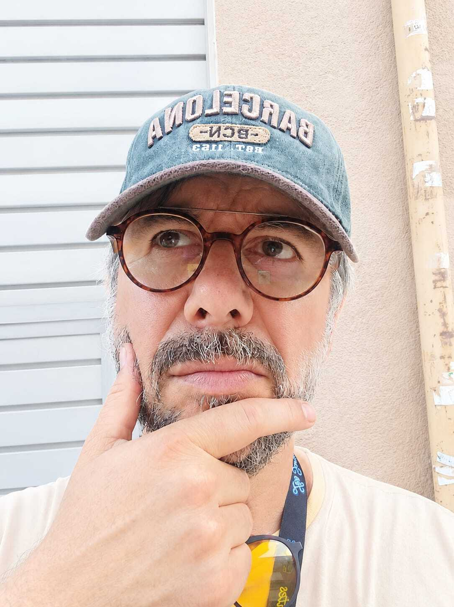
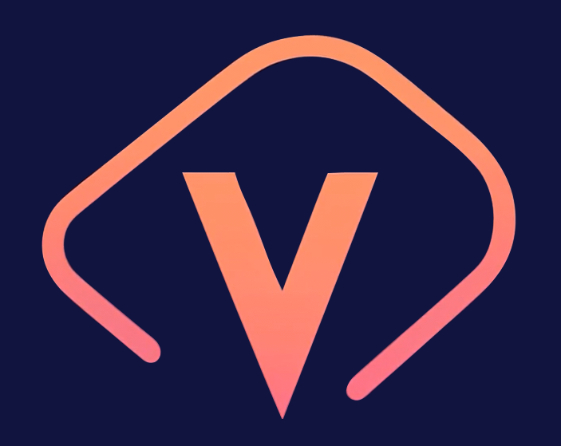
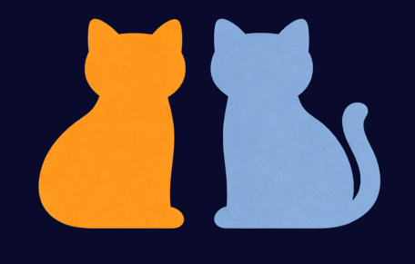
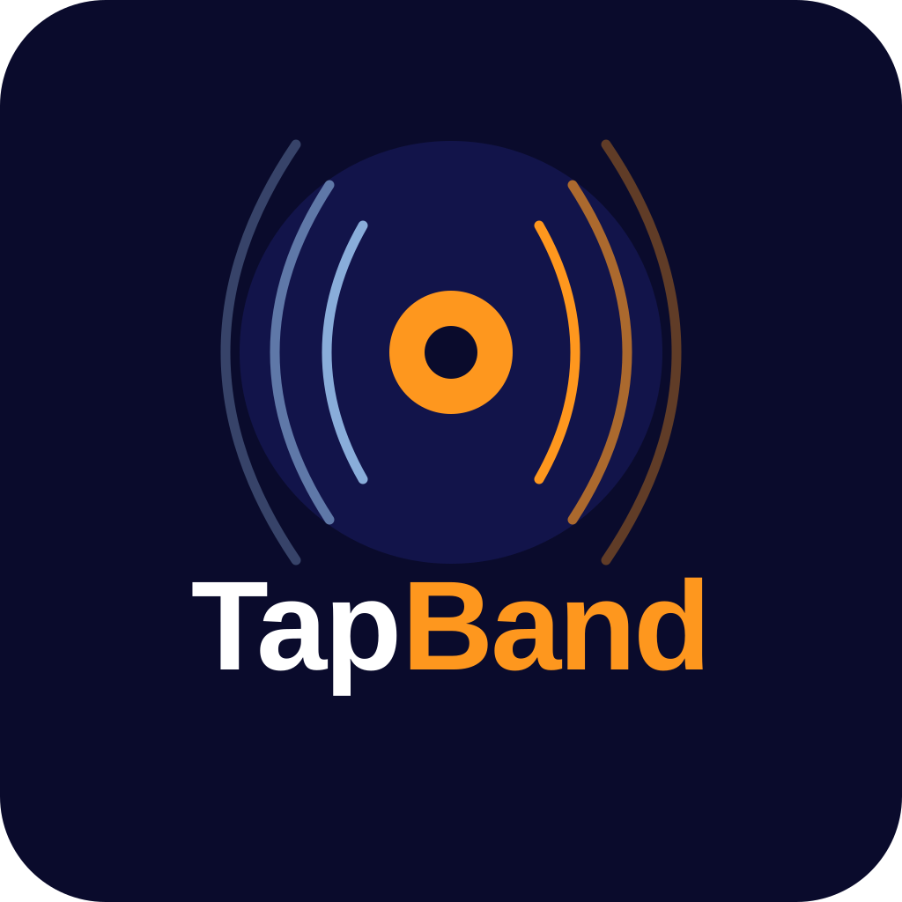
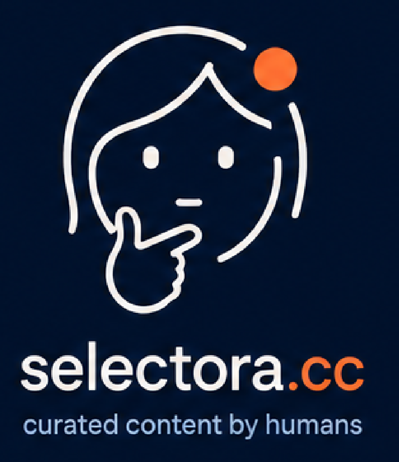
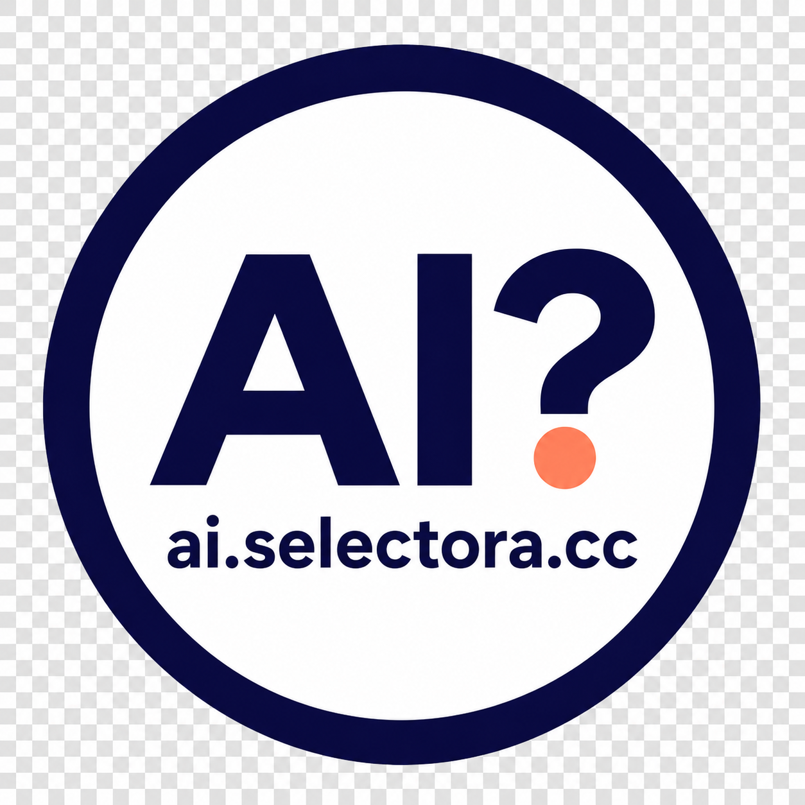
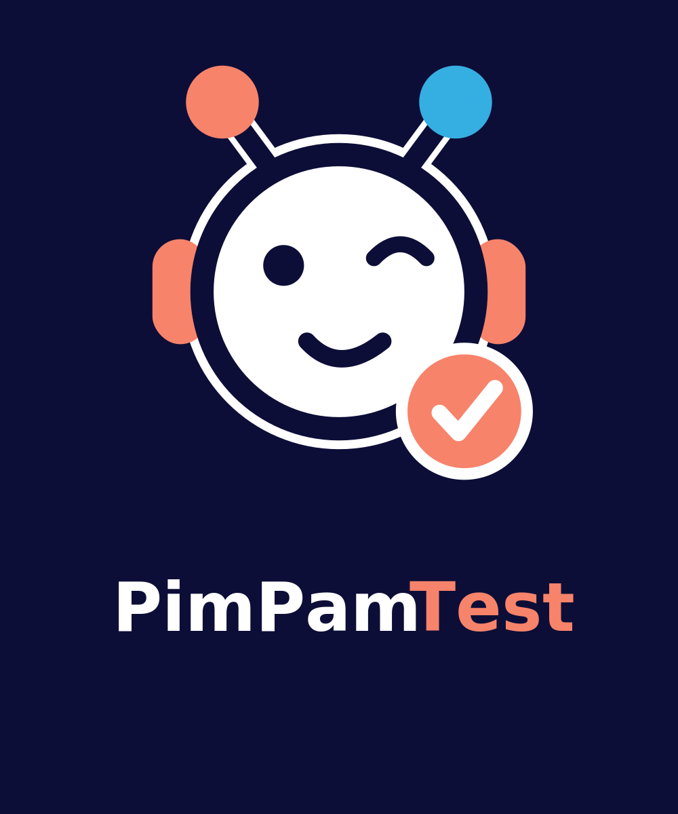
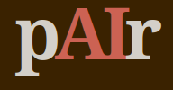

Research · Visualization · Writing
Research
Publications, theses and research projects on visualization, text exploration, reading interfaces and document collections.
Open research.nualart.catA selection of projects (2026): an eclectic mix for the age of AI, when projects can emerge before ideas are fully formed. Yet everything here begins with an idea—AI-free.

Research · Visualization · Writing
Publications, theses and research projects on visualization, text exploration, reading interfaces and document collections.
Open research.nualart.cat
Audiobooks · Digital culture
Audiobooks you can touch: audio, books and digital culture distributed on easy-access cards for listening, gifting and sharing.
Open audiovook.com
Languages · Narrative · Listening
Stories in two languages for learning through sentence-by-sentence narration, with understanding from the very first minute.
Open dual.cat
Music, Singing, Game
An Audiovook-related project focused on an interactive musical experience in the browser.
Open TapBand
Curation · Channels · Knowledge
A tool for collecting, organizing and sharing human-curated content: links, videos, podcasts and texts selected with care.
Open selectora.cc
Artificial intelligence · Transparency · Standards
An open badge system for clearly disclosing how AI was used in a website or project, with certificates and a verifiable public registry.
Open AI USE: DECLARED
Education · Exercises · Play
Exercises for students organized by category and level, with PimPam rewards for learning through play and saving their achievements.
Open PimPamTest (in Catalan)
Artificial intelligence · Collaboration · Projects
An open practice where two people work on a real project with AI as their main tool for thinking, deciding and building.
Discover pAIr